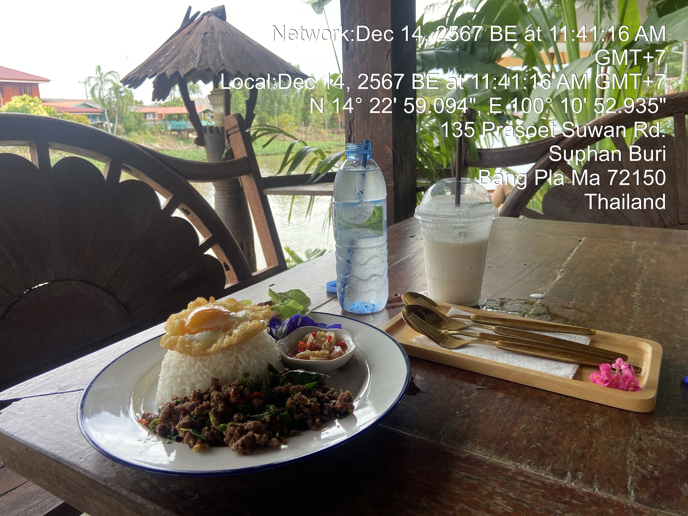
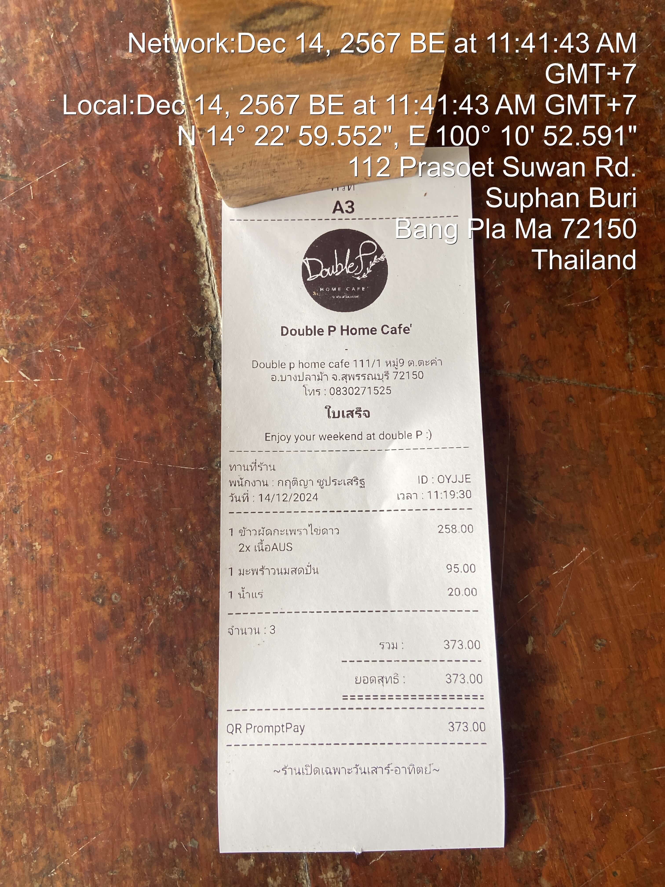
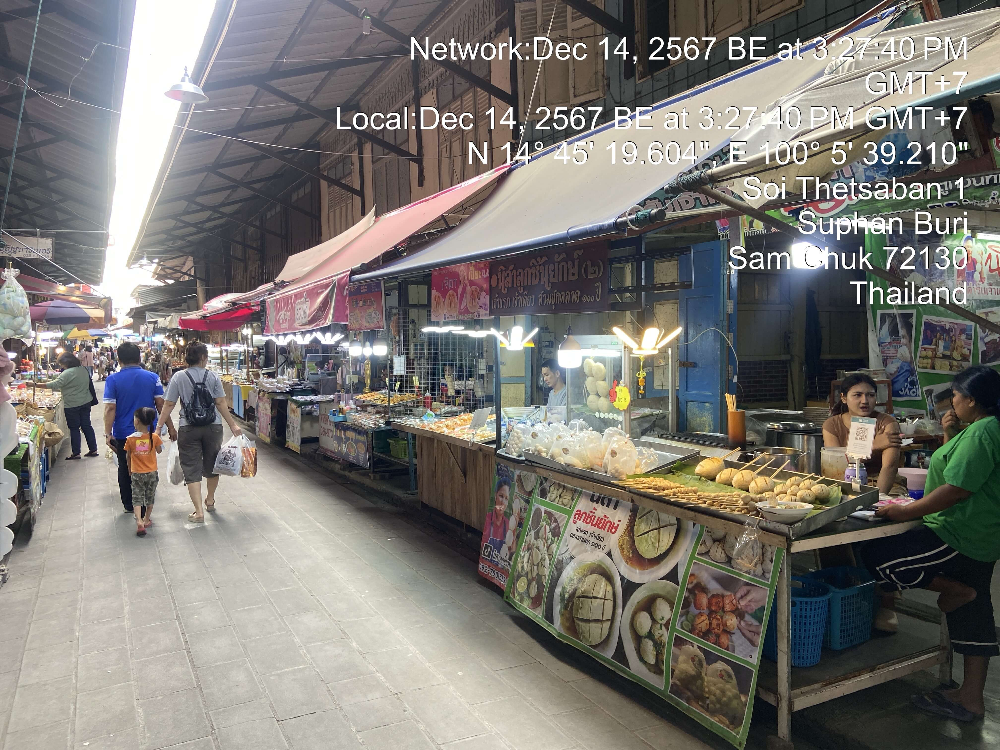
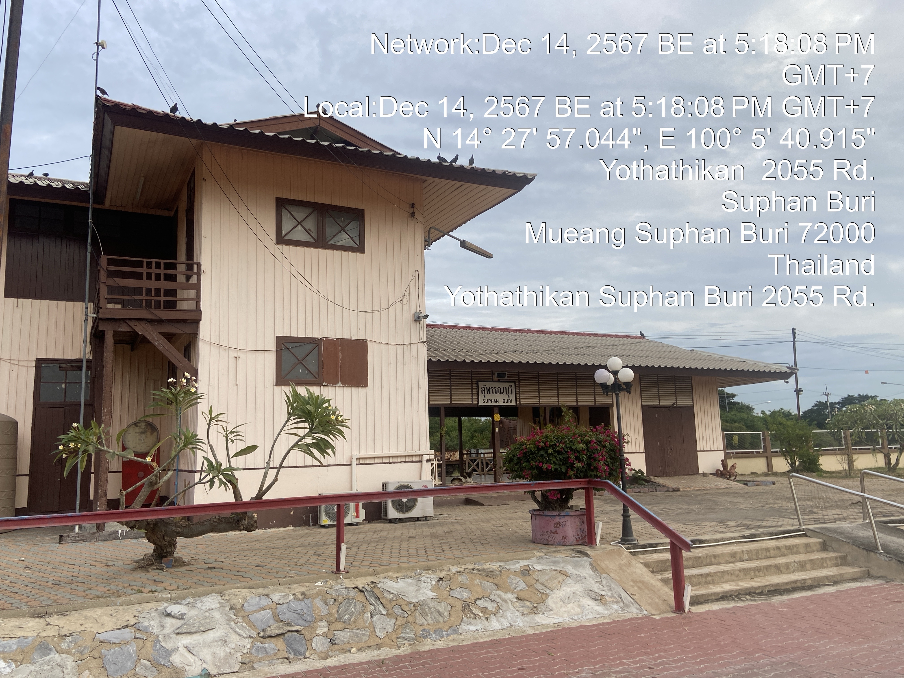

Rural Thailand Tales
Beyond the bustling streets of Bangkok lies another Thailand - one of gentle rice fields, morning mists, and timeless traditions. This is where the heart of Thai culture continues to beat strongly, unchanged by the rapid pace of urban development.






This charming town is just a 90-minute drive away, making it perfect for a weekend escape. December's cool weather and gentle breezes add to its allure. Here, time slows down—you can simply sit, unwind, and let the serene surroundings recharge your spirit.